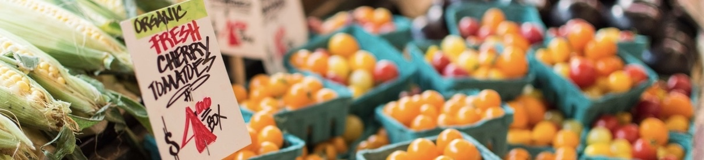

about rogue pickings
Created by Crystal De Luna-Bogan, a Le Cordon Bleu trained chef, Rogue Pickings is San Francisco's favorite fresh food truck. She and her team serve up innovative, farm-fresh pickings featuring seasonally inspired, responsibly sourced products. She also views her business as a platform to help educate people on the importance of knowing where your food comes from. Crystal's hard work was rewarded when Rogue Pickings was chosen "Food Truck of the Year" by the US Food Truck Association.